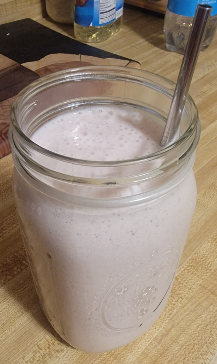

Breakfast Smoothie

I like to make a smoothie every morning for breakfast.
Most if the ingredients are interchangable, so don't worry too much about measuring.
It's alot of fun to experiment with new fruits!
Tools You Will Need.
Ingredients.
AVOID USING FRUITS OR JUICES WITH CITRUS. THIS CAN CAUSE THE MILK TO CURDLE.
- The Base A fiber rich fruit or veggie that will add thickness to your smoothie. (I like to use banannas or mangos)
- The Flavors I like to add strawberries, blueberries, and rasberries, but the possabilities are endless.
- The Juice I use milk, but you can use any fruit juice or even water!
Optional Ingredients.
I like to add protein and fats to my smoothies! It gives me the energy I need to make it through my morning!
- Protein Powder
- Yogurt
- Coconut Oil
Steps
- Start adding your Base fruits or veggies (this is a good time to add any optional ingredients).
- Add what Flavors you would like to have. I normally throw in a handful of strawberries, or some blackberries when they're in season!
- Fill the blender with Milk, Juice, or Water to the top of the fruits or veggies.
- Last blend until you get your desired consistancy.
Enjoy
Sit back and enjoy your smoothie! (It tastes better with a straw!)